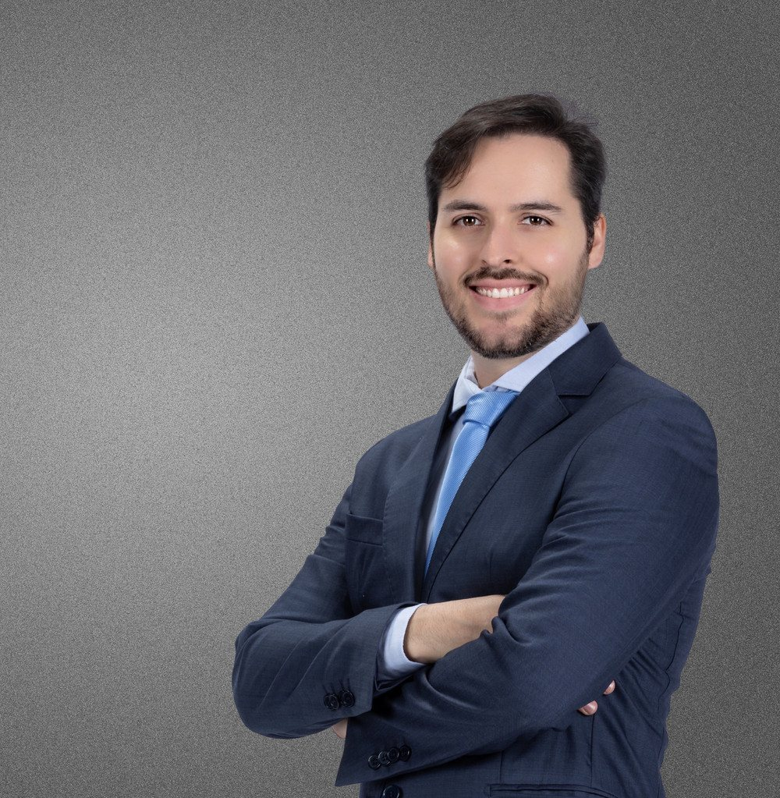

O próprio tecido
“Na mastopexia sem prótese eu trabalho com o próprio tecido da paciente.”
- Projeção
- Vem do próprio tecido da mama
- Colo
- Depende do tecido que você tem
- Formato
- Desenhado com o tecido da própria mama

Cirurgião plásticoCRM-BA 31290 · RQE 23262
Indicação correta, limites explicados e uma conversa honesta antes de qualquer decisão.
Mastopexia com ou sem prótese, mamoplastia redutora, abdominoplastia e otoplastia. Membro da SBCP, com residência em Cirurgia Plástica no HUPES/UFBA.
Por onde começar
“Primeiro vou entender sua queixa […]”, escreve o Dr. Thiago. Escolha o assunto e leia com calma antes da consulta.
Mastopexia com ou sem prótese: o efeito de cada escolha.
MastopexiaMamasMamoplastia redutora: retirar, remodelar e reposicionar, sem implante.
Mamoplastia redutoraAbdomeAbdominoplastia e o planejamento de mamas e abdome juntos.
AbdominoplastiaOrelhasOtoplastia para quem se incomoda com as orelhas de abano.
OtoplastiaMastopexia
“Antes de decidir colocar ou não a prótese, entenda qual efeito você tem em mente.”Dr. Thiago Barretto · Instagram, setembro de 2026
“Na mastopexia sem prótese eu trabalho com o próprio tecido da paciente.”
“Quando usamos a prótese, conseguimos acrescentar projeção, mais preenchimento no colo e um formato mais arredondado.”
“Na consulta eu costumo até desenhar essa diferença para que você consiga visualizar o que muda de uma escolha para a outra antes de decidir.”Dr. Thiago Barretto · Instagram, 22 de setembro de 2026Entender a mastopexia
Comparação simplificada, só em texto, a partir da explicação do Dr. Thiago. A indicação é individual, definida em consulta.
O caminho que ele escolheu
“Em um momento em que muita coisa na cirurgia plástica virou promessa, comparação e disputa por atenção, eu prefiro seguir por outro caminho. […] Primeiro vou entender sua queixa, avaliar seu corpo e saúde com seriedade e construir um plano possível, seguro e coerente com o que você deseja. Essa é a minha indicação para quem está pensando em operar, uma conversa honesta antes de qualquer decisão!”
Preparo e recuperação
Da primeira consulta às revisões no pós-operatório, cada etapa tem um cuidado. Os trechos entre aspas são do Dr. Thiago.

Trajetória
Médico graduado pela UFBA, cirurgião geral formado pelo Hospital Santo Antônio/Obras Sociais Irmã Dulce e cirurgião plástico formado pelo HUPES, como ele resume no currículo Lattes. As datas conferem com o histórico do CNES.

Nas palavras dele
“Sua cirurgia só precisa fazer sentido para você, que decidiu com segurança e consciência, cuidar de algo que te incomodava há muito tempo.”Dr. Thiago Barretto · Instagram, 8 de setembro de 2026
“A cirurgia plástica é uma combinação de técnica e empatia. É entender que por trás de cada decisão existe uma história, um sonho, uma confiança.”Instagram, outubro de 2024
“Olhar atento, conversa franca, respeito pela sua história e compromisso com seu conforto e segurança, desde a primeira consulta, até suas revisões no pós-operatório.”Instagram, janeiro de 2026
Avaliações no Google
Dr. Thiago e sua equipe, são de extrema responsabilidade, cuidado e atenção.
Profissional incrível. Desde a consulta até o pós.
Ele foi super paciente comigo e me acolheu em um momento da cirurgia onde eu estava emocionada
Profissionalismo, cuidado e atenção em cada detalhe.
Ótimo profissional, transparente
Trechos de avaliações públicas da ficha do Dr. Thiago no Google, com nome abreviado.
Conteúdos
Publicações do Dr. Thiago no Instagram e no Facebook. Os links abrem as publicações originais.
O que muda entre o próprio tecido e a prótese, e por que ele desenha essa diferença na consulta.
Ver no InstagramInstagram · julho de 2026Não é só retirar volume: o tecido é remodelado e reposicionado, sem implante.
Ver no InstagramInstagram · janeiro de 2026“O calor, por si só, não é contraindicação.” O que pesa na escolha da data.
Ver no InstagramInstagram · setembro de 2025Por que a menor cicatriz possível nem sempre é o objetivo.
Ver no InstagramVídeo no FacebookComo ele define o peso para operar com mais segurança, e quem escolhe o peso ideal.
Assistir no FacebookVídeo no FacebookParar de fumar, evitar bebida alcoólica, beber mais água e praticar atividades físicas.
Assistir no FacebookOnde atendo
“A estrutura mudou, mas a forma de atender continua igual.”Dr. Thiago Barretto · Instagram, janeiro de 2026
Alameda das Espatódeas, 567Caminho das Árvores · Salvador – BA · CEP 41820-460
Horário de atendimento
Horário da ficha do Google — confirme com a equipe. As consultas são com hora marcada.
Dúvidas frequentes
No Caminho das Árvores, em Salvador: Alameda das Espatódeas, 567, CEP 41820-460, o endereço da ficha do Dr. Thiago no Google. O agendamento é feito pelo WhatsApp. Veja horário e mapa.
Não. O Dr. Thiago faz a mastopexia com e sem prótese. Sem prótese, ele trabalha com o próprio tecido da paciente; com prótese, é possível acrescentar projeção, mais preenchimento no colo e um formato mais arredondado. A escolha depende do efeito que você deseja e da avaliação em consulta.
Não. Nas palavras dele, “o que avaliamos primeiro é a sua segurança!” (vídeo no Facebook). Ele define um peso mínimo, calculado de acordo com a sua altura, e deixa a escolha do peso ideal com você.
Nas palavras dele: “O calor, por si só, não é contraindicação.” Faz sentido pensar na sua rotina, na sua disponibilidade para o pós e na indicação correta para o seu caso (Instagram, janeiro de 2026).
“Cicatriz pequena nem sempre é sinônimo de bom resultado. Ela precisa ter o tamanho necessário para corrigir a flacidez e remover o excesso de pele” (Instagram, setembro de 2025). O desenho da cicatriz é explicado em consulta.
Valor e condições de atendimento são informados pela equipe, pelo WhatsApp. Sobre o valor, o Dr. Thiago escreveu que “o valor real não está apenas no orçamento em si” (Facebook).
Pelo WhatsApp (71) 99114-8490, o número publicado na ficha do Google. O horário da ficha é de segunda a sexta, das 8h às 18h; confirme com a equipe.
Agende
Atendimento com hora marcada no Caminho das Árvores, em Salvador. Fale com a equipe pelo WhatsApp (71) 99114-8490.